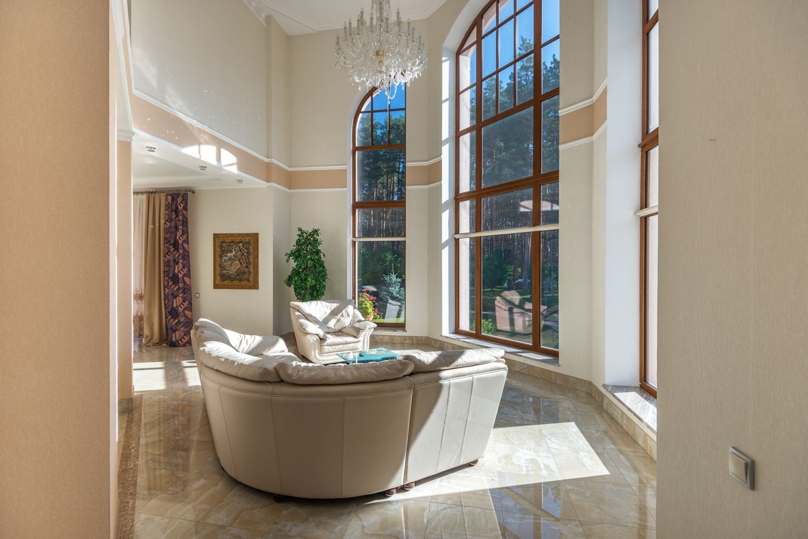

Conte o que procura.
Qual ambiente você quer transformar? Compartilhe o que tem em mente.
VIDRAÇARIA · MAIRIPORÃ, SP
Vidros e espelhos para transformar seus ambientes. Encontre referências e converse sobre a sua ideia com a Lauraglass.
Cada ambiente começa com uma ideia.
Vamos conversar sobre a sua?

01 / EXPLORE POSSIBILIDADES
Boxes, espelhos e soluções em vidro são exemplos de organização deste catálogo demonstrativo. Os serviços disponíveis serão confirmados com a empresa.
Categorias ilustrativas. A presença de uma referência não confirma a oferta do serviço.
02 / UM PONTO DE PARTIDA
Explore ambientes, encontre detalhes e salve ideias para a conversa.
Imagens de referência. Não representam trabalhos executados pela Lauraglass.
03 / DA IDEIA À CONVERSA
Qual ambiente você quer transformar? Compartilhe o que tem em mente.
Se tiver, envie imagens e medidas aproximadas. As fotos podem ser anexadas no WhatsApp.
Confirme a disponibilidade, os detalhes do projeto e as condições diretamente no atendimento.
04 / VAMOS CONVERSAR
Preencha os detalhes para preparar sua mensagem. Você confere e envia no WhatsApp da Lauraglass.
(11) 96319-0155 ↗Mairiporã · São Paulo
ANTES DE COMEÇAR
Use o botão de WhatsApp ou preencha o formulário para organizar sua ideia. A mensagem só será enviada quando você confirmar o envio no WhatsApp.
Sim. Ao abrir a conversa no WhatsApp, você poderá anexar suas referências e fotos do ambiente diretamente por lá.
Para iniciar a conversa, compartilhe medidas aproximadas, se tiver. Confirme com a Lauraglass quais informações serão necessárias para avaliar o projeto.
Não. São fotografias licenciadas usadas exclusivamente como inspiração nesta proposta visual. As categorias e os serviços disponíveis ainda precisam ser confirmados com a empresa.
Converse diretamente com a Lauraglass pelo WhatsApp. Disponibilidade, valores, condições e eventuais etapas do atendimento dependem da confirmação da empresa.